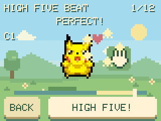
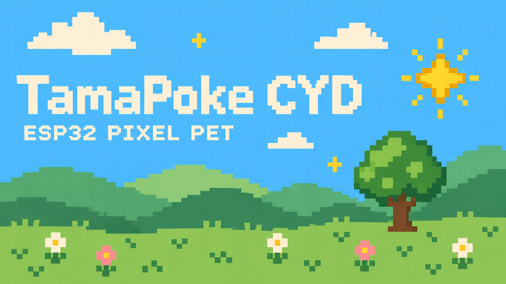
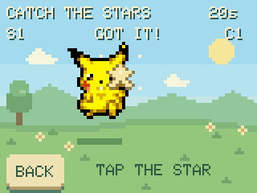
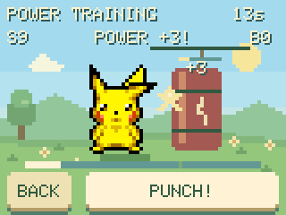
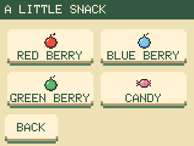
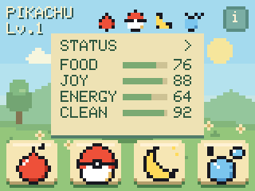
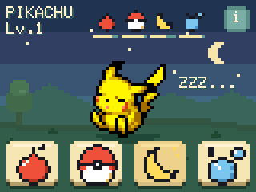
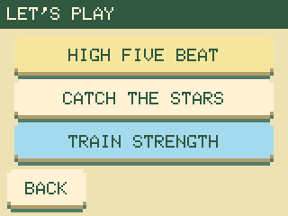
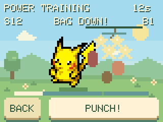

節奏擊掌
等游標進入亮區，再點 HIGH FIVE!。一局 12 拍，看看能連續擊掌幾次。

插上 USB，就能準備開始
使用電腦版 Chrome／Edge 與 USB 資料線。雙 USB 板可沿用 USB-A → Micro-USB。
遊戲使用軟體時鐘。校時後才會計算離線時間與每日照顧；養成本身不用連網。
陪牠吃飽，也陪牠玩
樹果餵食與點心
精靈球開啟遊戲選單
月亮睡覺與喚醒
泡泡清潔身體

等游標進入亮區，再點 HIGH FIVE!。一局 12 拍，看看能連續擊掌幾次。

點下落的星星，讓皮卡丘追上接住。20 秒內挑戰連擊，漏接後也能繼續。

蓄力滿格再出拳，力道更強。沙包會晃動、裂開、碎落，15 秒後結算力量。
每次點擊後記得抬起手指。BOOT 短按返回主畫面，長按 3 秒開設定、6 秒重新校正。這版沒有音效。
和板上使用相同繪圖程式
以下使用示例存檔，為韌體直接繪圖，並非 LCD 攝影。





這是獨立的 CYD 2.8 吋版本，使用傳統 ESP32、4 MB Flash 與 320×240 LCD。微雪 ESP32-S3 的韌體無法套用到這塊板子。
選「保留存檔更新」會先比對板上分割表，只寫入程式區，最後比對完整存檔區。若是首次安裝，原程式、角色與校正都會清除。請先選對安裝方式。
使用電腦版 Chrome 或 Edge，確認 USB 線支援資料傳輸，並關閉 Arduino IDE、序列埠監控等程式。若仍停在連線中，可按住 BOOT，按一下 RESET，再放開 BOOT 後重試。
不用。皮卡丘和雷丘的一般／異色動畫都放在 Flash。這版沒有完整 151 隻素材、音效、Wi-Fi 校時或電池管理；以 USB 供電遊玩。
持續按住 BOOT 到 6 秒，依序按住四個十字約 0.2 秒並放開。完成後保存校正值，並恢復原本的旋轉方向。
請參考 編譯、完整 Flash 備份與進階安裝說明。原始 Flash 備份只保存於你自己的電腦，不會上傳到本網站或 repo。